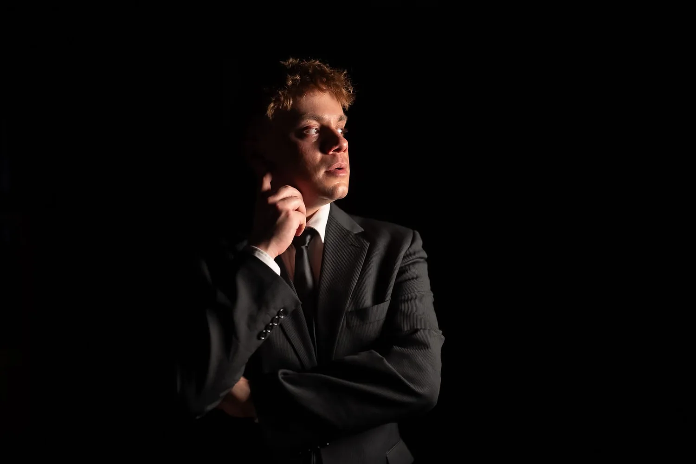
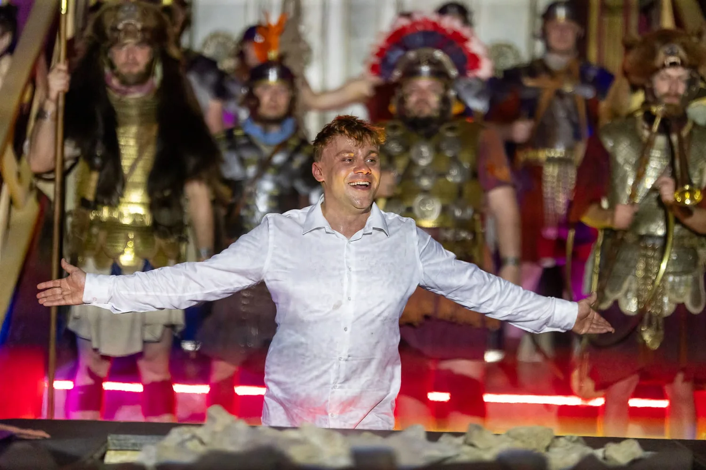
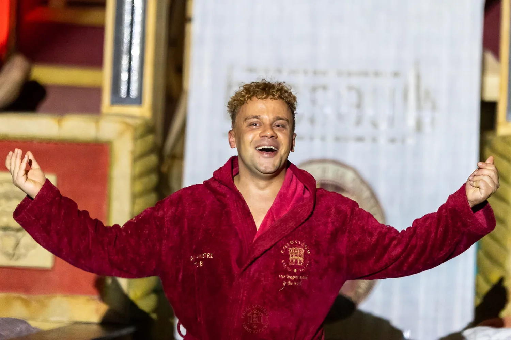
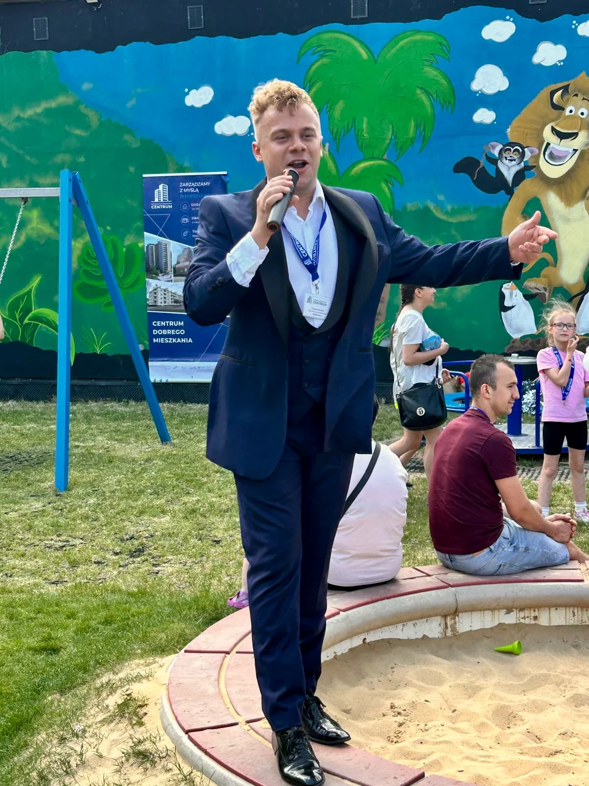
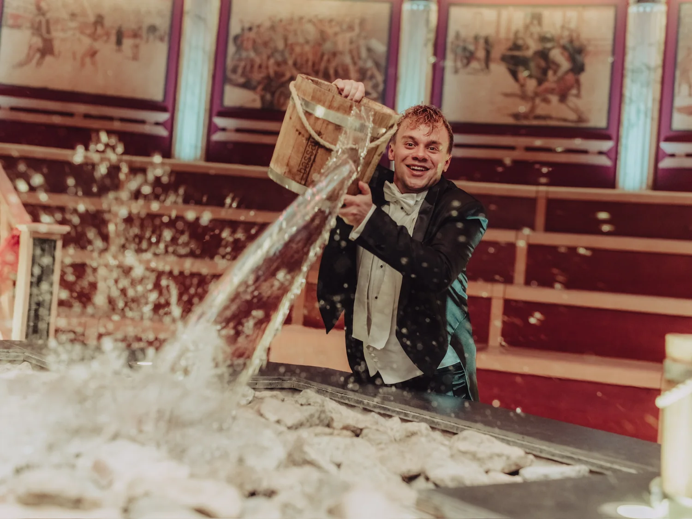
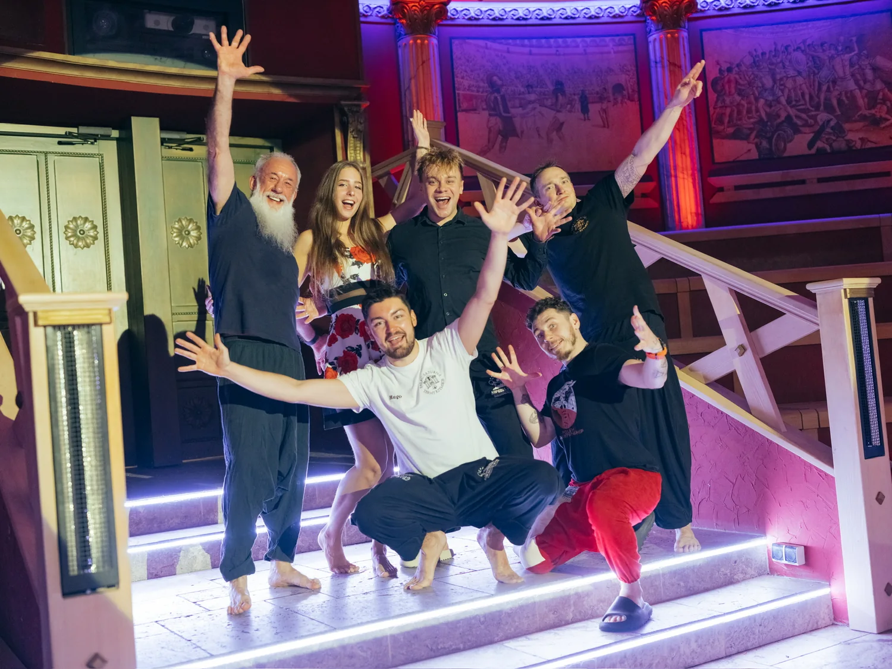

Saunameister. Sänger. Musicaldarsteller. Moderator. Ich verbinde Stimme, Theater, Emotionen und den Kontakt zum Publikum — ganz gleich, ob die Bühne ein Theater, eine Gala oder eine heiße Sauna ist.
Gesang und Theater begleiten mich seit vielen Jahren. Ich trete in Operettenproduktionen und Konzertprojekten auf, arbeite mit Musiktheatern und Künstleragenturen zusammen und habe meine Bühnenerfahrung auch in die Welt der Sauna-Zeremonien übertragen.
Heute entwickle ich meine eigene Sprache aus Live-Musik, Schauspiel, Storytelling und Aufguss. Es geht mir nicht nur darum, ein Programm zu präsentieren. Es geht um einen Moment, an den sich das Publikum erinnert.

Sauna-Zeremonien, eigene Shows und die Arbeit mit Musik, Duft, Hitze und Emotionen. Die Sauna als vollwertige Bühne.
Oper, Operette, Musical, Konzerte und musikalische Gestaltung besonderer Anlässe. Das Repertoire wird auf Ort, Anlass und Publikum abgestimmt.
Moderation und verbindende Worte. Konzerte, Veranstaltungen, Galas und Wettbewerbe — mit Energie, Storytelling und direktem Kontakt zu den Menschen.

„Iluzja Życia” to show, od którego zaczęło się świadome łączenie mojego świata scenicznego z aufgussem. Teatr, przerysowanie, muzyka, zapach, ruch i śpiew na żywo spotykają się w kilkunastominutowej historii.
Dieser Ansatz ist zum Markenzeichen meiner eigenen Zeremonien geworden: Technik ist wichtig, doch entscheidend ist, was das Publikum nach dem Ende der Session fühlt.
„Steam und Voice sind die Werkzeuge.
Experience ist das, was bleibt.“
Ich arbeite mit Musiktheatern und Künstleragenturen zusammen und trete in Operettenproduktionen, Konzerten und Musikprojekten auf.
Hochzeiten, Jubiläen, Familienfeiern, Galas und Firmenveranstaltungen. Das Repertoire reicht von sakraler und klassischer Musik bis zu Operette, Musical und Unterhaltungsmusik.
Soloprogramme und gemeinsame Bühnenprojekte. Das Repertoire kann individuell auf den Charakter der Veranstaltung abgestimmt werden.


Ich bin gern das Bindeglied zwischen Bühne und Publikum — erzähle, schaffe Atmosphäre, reagiere auf das, was im Moment geschieht, und begleite das Publikum durch den ganzen Abend.
Ich moderiere Konzerte, Kultur- und Open-Air-Veranstaltungen, Galas sowie internationale Sauna-Events. In Musikprojekten entwickle ich außerdem verbindende Texte und die Dramaturgie zwischen den einzelnen Programmpunkten.


Eine eigene Show, ein Konzert, musikalische Gestaltung, Eventmoderation oder ein Projekt, das mehrere Welten verbindet? Sprechen wir darüber.